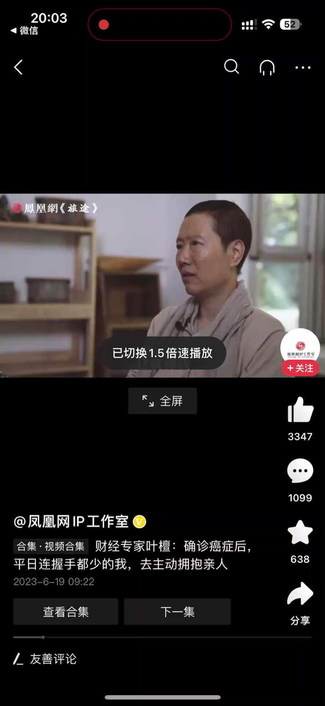
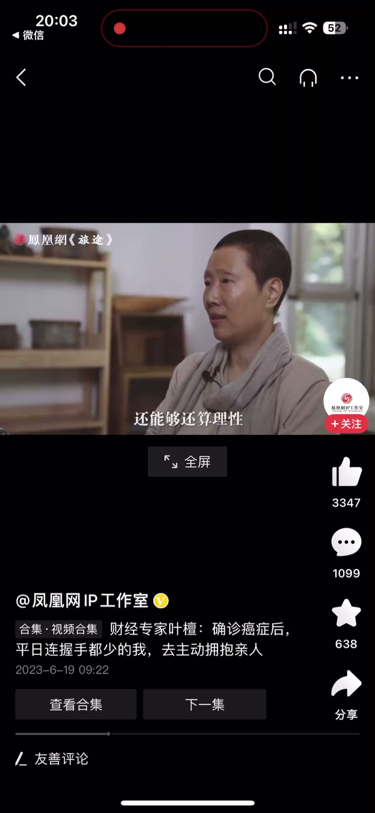
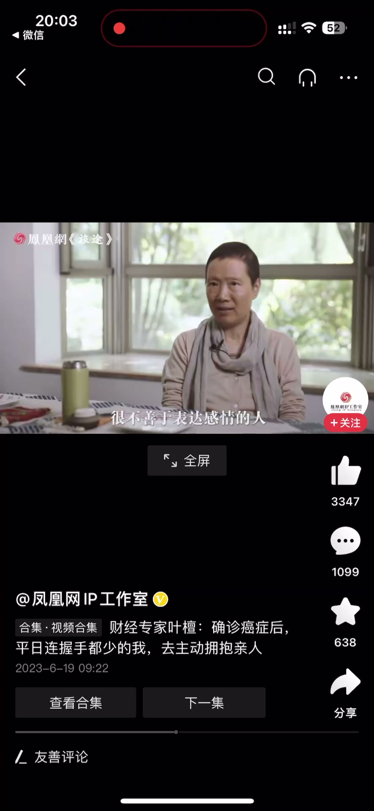
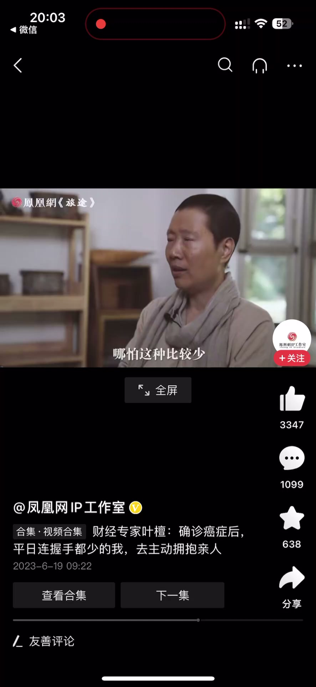
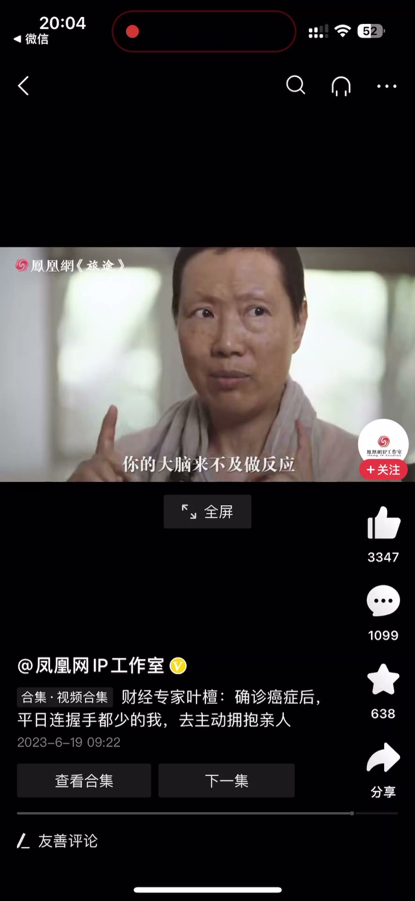

内容要点
一段 1 分多的第一人称讲述：生病确诊结果出来时，讲者的第一反应是「没反应」。表面冷静探讨，其实头脑空白、来不及做出反应；亲戚们觉得他变软弱了，而软弱体现在那时非常需要关爱、需要肢体的接触。他把这种感觉比作溺水——溺水的时候由身体在做反应，大脑来不及做反应，只想抓到一点温暖和温度。
知识结构
结果出来时第一反应是没反应，就像探讨遗嘱时表面冷静，其实头脑是空白的，来不及做出反应；总体看起来还算理性。
亲戚觉得他平时挺勇敢，面临这种事却比较软弱。软弱体现在很需要关爱：平时不善表达感情、很少拥抱别人，但在那两个月里会需要肢体接触，拥抱过几次亲戚。
确实像溺水的感觉：溺水的时候由身体在做反应，大脑来不及做反应；只想抓到一个东西，能感觉到温暖和温度。
确诊那一刻的反应不是理性或勇敢，而是「身体先于大脑」的溺水感——需要关爱与肢体接触不是软弱，而是人体本能的求救。
00:00-00:30第一反应：头脑空白
生病期间结果出来的时候，你第一反应是什么？讲者的回答：我第一反应是没反应。
这就像我在探讨我的遗嘱的时候，表面上冷静在探讨，其实我那个时候头脑是空白的，来不及做出反应。
我总体看起来还算理性，但是我也听到亲戚有这样的说法：大家说他平时挺勇敢的，面临这种事情的时候，没想到也比较软弱。


00:31-01:13软弱的真相：溺水感
我的软弱体现在什么地方呢？就是在那个时候我会很需要关爱。我说过我是一个很不善于表达感情的人，我很少去拥抱别人，也很少主动去握手，但在那个时候你会发现你需要肢体的接触。
那人家就会觉得我行为改变了，哪怕这种改变比较少——在那两个月里头，我有可能拥抱过几次亲戚，人家就觉得他跟原来不一样，他变软弱了，就是很需要关爱、很需要人。
在那个时候确实像溺水的感觉。溺水的时候由身体在做反应，你的大脑来不及做反应，那么我就想要抓到一个东西，使我能够感觉到温暖、温度。



完整转录（34段）
以下文本由 Whisper medium 模型自动转录，可能存在少量识别误差，已尽可能修正。
生病期间结果出来的时候
您第一反应是什么
我第一反应是没反应
这就像我在探讨我的遗嘱的时候
表面上冷静在探讨
其实我那个时候头脑是空白的
来不及做出反应
我总体看起来还能够还算理性
但是我也听到亲戚有这样的说法
大家说他平时挺勇敢的
面临这种事情的时候
没想到也比较软弱
我的软弱体现在什么地方呢
就是在那个时候
我会很需要关爱
我说过我是一个很不善于表达感情的人
我很少去拥抱别人
我也很少去主动的握手或者什么
但是在那个时候
你会发现你需要肢体的接触
那人家就会觉得我行为改变了
哪怕这种比较少
但是在那两个月里头
我有可能拥抱过几次亲戚
人家就会觉得他跟原来不一样
他变软弱了
就是很需要关爱
很需要
人在那个时候是
确实像溺水的感觉
溺水的时候由身体在做反应
你的大脑来不及做反应
那么我就想要抓到一个东西
使我能够感觉到温暖温度